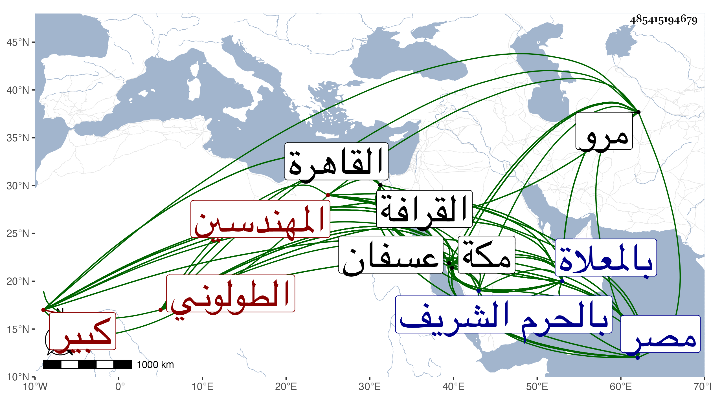

0902Sakhawi.DawLamic.ITO20230111-ara1.EIS1600.485415194679
Biography ID: 485415194679
أحمد بن أحمد بن محمد بن علي بن عبد الله بن علي شهاب الدين بن المعلم شمس الدين الطولوني كبير المهندسين ، قال المقريزي في عقوده : كان أبوه وجده مهندسين وإليهما تقدمة الحجارين والبنائين بديار مصر وعليهما المعول في العمائر السلطانية ، وتقدم أبوه بخصوصه في الأيام الظاهرية برقوق جدا بحيث تزوج السلطان ابنته وتزيا أخوها صاحب الترجمة بزي الأتراك وحظي عند الظاهر أيضا وتزوج بابنته بعد أن طلق أخته عمتها وتزوجها أمير اخور توروز الحافظي وعمله أحد أمراء العشرات الخاصكية إلى أن مات في ليلة الخميس خامس عشر رجب سنة إحدى ودفن بتربتهم من القرافة وكانت جنازته حافلة ويقال إنه محمد لا أحمد وقد خلط شيخنا ترجمته بترجمة أبيه فإنه قال في أنبائه ما نصه : كان عارفا بصناعته تقدم فيها قديما مع حسن الشكالة وطول القامة والمنزلة المرتفعة عند الظاهر برقوق بحيث قرره من الخاصكية ولبس لذلك زي الجند ثم أمرة عشرة وتزوج ابنته وكانت له ابنة أخرى تحت ناظر الجيش الجمال القيصري ثم إن الظاهر طلق ابنته وتزوجها نوروز بأمره وتزوج هو أختها . ومات في رجب سنة إحدى ، وقد أعاده شيخنا على الصواب في التي بعدها بدون تسمية أبيه بل قال أحمد بن محمد وباختصار فقال الطولوني المهندس كان كبير الصناع في العمائر ما بين بناء ونجار وحجار ونحوهم ويقال له المعلم وكان من أعيان القاهرة حتى تزوج الظاهر ابنته فعظم قدره وحج بسبب عمارة المسجد الحرام فمات راجعا بين مرو عسفان يعني في يوم الجمعة عاشر صفر وعادوا به فدفن بالمعلاة كما قاله الفاسي في مكة وترجمه بالمعلم شهاب الدين المصري تردد إلى مكة للهندسة على العمارة بالحرم الشريف وغيره من المآثر بمكة غير مرة آخرها سنة إحدى مع الأمير بيشق الظاهري وتوجه منها بعد الفراغ من العمارة في أوائل صفر سنة اثنتين فأدركه الأجل بعسفان في يوم الجمعة عاشر صفر فحمل إلى مكة ودفن بالمعلاة وكان الظاهر صاحب مصر صاهره على ابنته ونال بذلك وجاهة ، وقال المقريزي : أحمد بن محمد الشهاب الطيلوني تمكن في الدولة وتزوج السلطان بابنته وصار ابنه الأمير شهاب الدين أحمد من جملة الأمراء ، وتوفي بعسفان يوم الجمعة عاشر صفر سنة اثنتين فحمل إلى مكة فدفن بالمعلاة رحمه الله وإيانا .
